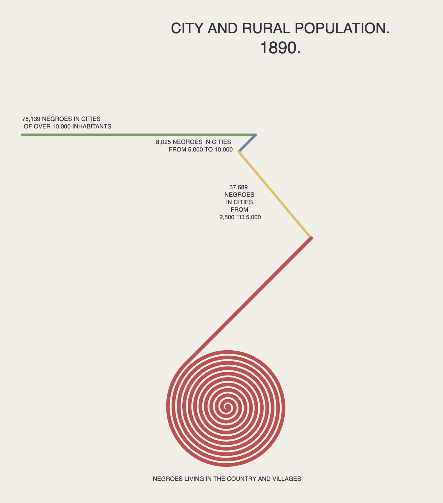

The Du Bois Challenge: A masterful recreation or not?
Yoh | November 9, 2025

Every once in a while, as someone given the privilege to mentor and instruct young academics, you "get it right" somehow and marvel at the coalescence of an idea you were able to instill upon a student—and how that scholar transforms it into something remarkable. On this particular day, in my "Introduction to Data Visualization" course, the topic was a dialogue on the relationship between the terms "Data Visualization" and "Social Justice."
When I used to teach in the United States, social justice was a part of student life. It was the essence of being at a university—the privilege given to youth before embarking into the "real" world; a sanctuary where they are given a platform to express, critique, and create knowledge to oppose those who oppress the underprivileged. But here in Japan, where the young are in a state of stupor they nonchalantly call "heiwa-boke," social justice is but a sliver of their imagination. Instead, youth in Japan are confronted with other realities that come with a largely non-violent society but are nevertheless consumed by another type of social injustice—one resulting in the suffering of so many young people who find no comfort, leading to an oddly unbalanced number of mental health predicaments.
On this day, as I do in every lecture, I opened up a dialogue by introducing historically impactful visualizations. It is still a wonder that every bit of knowledge we produce with modern technology was, in some form, evident and produced hundreds of years ago by like-minded scholars of their time. Tools of the trade may have changed, and the ease with which we achieve results may differ, but the essence of producing visual knowledge remains the same.
The abundance of digital tools has unfortunately de-romanticized the value of creation—where once, with no digital tools, a single visual graphic no doubt took days, now it takes mere seconds. The heart and soul authors dedicated to their designs of the past differs greatly today, evidenced by the lackluster quality of too much digital content. Alas, I digress—this lecture introduced W.E.B. Du Bois. For those familiar with the history of data visualization, the name is a familiar one. For others, know that this man, born three years after slavery was abolished in the United States, dedicated his life to producing what I will call visual justice—a series of incredibly simple yet powerful visual anecdotes that, when seen together, tell a compelling story of the evolution of African American life and struggle in the United States.
At a glance, it is a fight for justice, a plea for understanding, and a reminder that African Americans are humans like all others around them. With this, I challenged my heiwa-boke students to "be" Du Bois in the modern era—to reproduce his graphics using modern tools. This challenge came to me on a whim, as I often do by procrastinating until the very last minute before my lectures begin—but it was a light-bulb moment: what could students with little to no drive toward social justice do with material from a different world and a different time? It was, in a sense, a reckless endeavor—one that could easily have backfired and produced little of value. But herein lies that moment I spoke of earlier—the coalescence of knowledge from a bygone era merging with that of a modern-day scholar from an entirely different world.
And so it was that Shion, a second-year engineering student at Reitaku University, took it upon himself to reproduce one of Du Bois's most fascinating graphics—the "spiral" graph. This graphic, a stunning visual production, at a glance resembles a "bull's-eye" target, with colorful lines culminating in red circular spirals at a central core. The brilliance of this graphic lies in taking four numerical data points and producing a visually stunning display. A pie graph may suffice—but does a pie graph imply mobility? A bar graph may suffice—but does a bar graph imply distance?

In Du Bois's graphic above, the green portion represents urban areas, the red spiral represents the countryside, and the other colors the areas in between. It represents a pathway—a journey one must undertake to escape the countryside and travel to the metropolis.
And here is Shion's reproduction of Du Bois's graphic, using JavaScript (specifically p5.js). What the finished product cannot fully convey is that Shion added animation—a real-time drawing of each bar's pathway to evoke the feeling of a journey through space and time. Furthermore, Shion was somehow able to overcome the mathematical challenge of creating the spiral, which requires additional logic to ensure that it does not intersect itself—that it continues inward without overlap, terminating at its center at just the right moment.
The graphics below show Shion's animation sequence of pathway from the city to the countryside:


Seen side by side, hidden within the wonder of this reproduction is the realization that, while honoring the original design, the digital version exposes striking differences—most notably the inaccuracies in the original's segment lengths relative to their data values.
Perhaps Du Bois and his team purposefully prioritized visual harmony over numerical precision—or perhaps such deviations were simply a limitation of their tools. And maybe, just maybe, this was the romance they intentionally infused into their visual craft—the human touch that machine-based tools can no longer replicate in today's world.